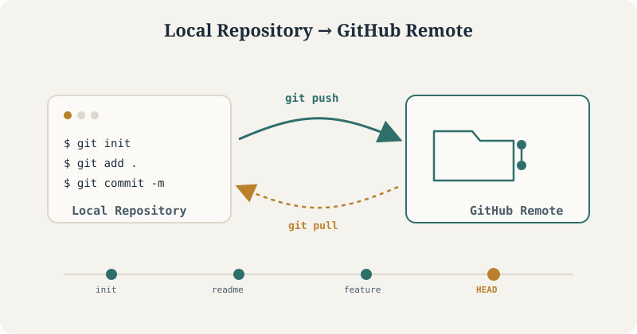

Creating and Managing a GitHub Repository
A practical guide from local setup to GitHub push

The core workflow this tutorial covers: initialize locally, commit your work, and push it to a hosted GitHub remote.
Version control is the foundation of any reproducible project, whether you’re managing a single analysis script or a multi-contributor codebase. This tutorial walks through the complete lifecycle of a Git-tracked project — from initializing a local repository to hosting it on GitHub and keeping the two in sync. Every command below is copy-paste ready for your terminal.
Git installed GitHub account Terminal access
Create a New Local Project
mkdir my_project # Create project folder
cd my_project # Navigate into folder
git init # Initialize Gitecho "# My Project" >> README.md # Create a README filegit add README.md # Stage file
git commit -m "Initial commit" # Commit fileLink to GitHub Repository
Before running the commands below, create an empty repository on GitHub — don’t initialize it with a README, since your local project already has one.
Once created, GitHub will show you a remote URL. Use either of the two methods below to connect it to your local project.
Method 1: Using HTTPS
git remote add origin https://github.com/<username>/my_project.gitMethod 2: Using SSH (if keys are configured)
git remote add origin git@github.com:<username>/my_project.gitPush Code to GitHub
git branch -M main # Ensure branch is 'main'
git push -u origin main # Push to GitHubUpdate Changes to GitHub Later
When you make changes locally:
git status # Check modified files
git add . # Stage all changes
git commit -m "Describe your changes here"
git push # Push updates to GitHubClone an Existing Repository (Optional)
If you want to work on an existing repo:
git clone https://github.com/<username>/existing_repo.git
cd existing_repoMake changes, then:
git add .
git commit -m "Updated files"
git pushNext Steps
You now have a fully version-controlled project hosted on GitHub, with a repeatable workflow for committing and pushing future changes. From here, consider exploring branching for parallel feature work, .gitignore for excluding files from version control, or GitHub Actions for automating tests and deployments.
Branching .gitignore GitHub Actions Pull Requests